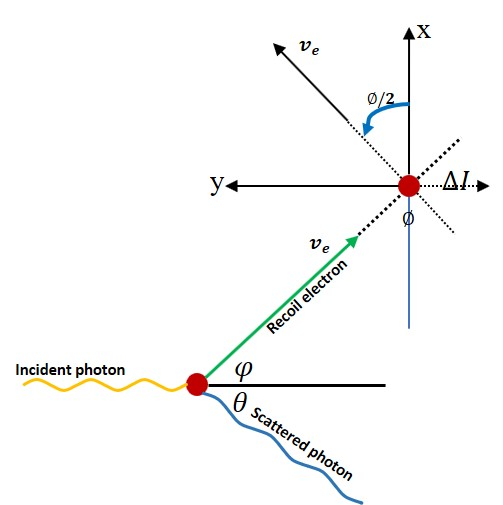
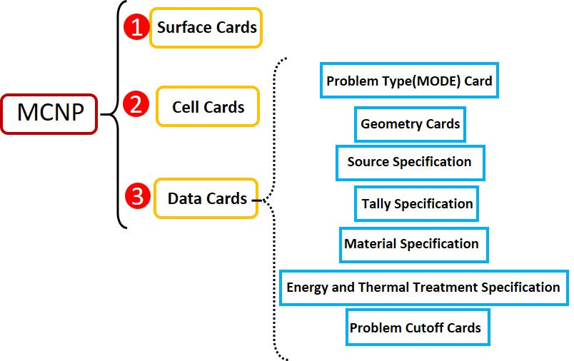

3. MCCM algorithm¶
The possible damage induced by radiation in solid materials has been a topic of great interest for the scientific community.The effects that may be induced by this way depend on the nature of the study material. To obtain a good effectiveness inside the material volume,inclusive at high depth,it is well-known that the gamma radiation is the best candiate. One of researchs of our group is to research the influence of materials properties under defects.Different defects have different impacts on the optical、electrical and magnetic material properties,However it is difficult to study the single defect’s effect which can give a more clear point of material properties interpretation.Because when the heavy-ions and neutron irradiated the materials,it is a complicated process with various defects and difficult to distinguish different defects effect on material properties.But the good news is that gamma-ray irradiation can separate the defects on the basis of material atom displacement threshold energy(\(E_d\)) when our group reasearch the gamma-ray influence different dioxides.
3.1. Basic Models and Methods¶
3.2. MCCM algorithm¶
The number of atom displacements in the voxel volume \(N_{dpa}\) from the MCCM algorithm is an extended sum over the calculated discrete electron flux values at a given depth \(z\) ,generalized for any k-atom in the materials:
where \(n_k\) is the relative fraction of the k-atom in its crystalline sublattice and \(N^e_{dpa,k}\) is obtained for each one of these atoms.The number of atoms displaced per electron was calculated following the expression proposed by Oen and Holmes:
where
is the cutoff kinetic energy of electrons in order to displace an atom from its crystalline site,:math:N_a is the number of atoms in a unit of volume in the sample and (-dE/dx) is the electron stopping power,calculated following the expression given by Bethe and Ashkin:
where \(Z^2_m\) is the mass square atomic number of the sample material and \(I\) is the mean excitation potential of the atom.
The incident gamma radiation produces secondary electrons inside material. These electrons can remove an atom from its lattice position through elastic scattering processes.The removed atom is known as a primary knock-in atom(PKA) and the corresponding cross section, \(\sigma_{PKA}\),is obtained starting from the McKinley-Feshbach approximation.If any of these recoil atoms has a kinetic energy above the displacement threshold energy \(T_d\),the secondary atoms can be knocked on by the PKA and removed from the lattice.The number of secondary displaced atoms can be caclulated by introducing the damage function \(v(T)\). Then,the total number of displaced atoms per target atom can be obtained by writing the displacement per atom cross section as follows:
with
For the damage function we use the Kinchin-Pease model
where
Notation |
Meanings |
|---|---|
\(Z_a\) |
atomic number of target atom |
\(r_0\) |
electron classical radius |
\(\alpha\) |
\(Z_a/137\) |
\(\beta\) |
ration of electron velocity to light velocity |
\(\gamma\) |
\(1/(1-\beta^2)\) |
\(T_m\) |
\(2E(E+2mc^2)/Mc^2\) (maximum kinetic energy of recoil atoms) |
\(E\) |
electron kinetic energy |
\(mc^2\) |
electron rest energy |
\(M\) |
atomic mass |
In order to evaluate the damage function,the average atom recoil kinetic energy \(T_{av}\) was used obtained by the expression
3.3. MCNP¶
MCNP is a general purpose Monte Carlo N-Particle code that can be used for neutron,photon,electron,or coupled neutron/photon/electron transport,including the capbility to calculate eigenvalues for critical systems.For beginners,its tutorials are unfriendly and obscure, and for this purpose,I rewrite a simple and intelligible tutorial for beginners which can reduce time and vigour for the research works.Okay,let’s begin our tour.
3.3.1. Surface Cards¶
Surface can be defined by equations, points ,or macrobodies.In this simple tutorial,I only introduce the equations section which is most popurlar use in the simulation works.If your work involes other section,you can sql official documentation. Okay,You can define your surfaces with the following form and relative explainations are in the table below.
def surface_card():
/*
Form: j k a list
*/
return 0;
3.3.2. Cell Cards¶
If you have read the surface cards section,it is cheerful to use these surfaces to define the cell or geometry for your model. The geometry of MCNP treats an arbitrary three-dimensional configuration of user-fined materials in geometric cells bounded by first- and second-degree surfaces. The calls are defined by the intersections, unions, and complements of the regions bounded by the surfaces.Each surface divides all space into two regions,one with positive sense with respect to the surface and the other with negative sense. Define \(S=f(x,y,z)=0\) as the equation of a surface in the problem.For any set of points \((x,y,z)\),if \(S=0\) the points are on the surface. If \(S\) is negative,the points are said to have a negative sense with respect to that surface and,conversely,a positive sense if \(S\) is positive.
3.3.3. Data Cards¶
3.3.4. Some Examples¶
Fmn examples:
F4:N 10 FM4 0.04789 999 102 M999 92238.13 1
The F4 neutron tally is the track length estimate of the average fluence in cell 10.Material 999 is 238U with an atomic fraction of 100% where C=0.04787 normalization factor(such as atom/barn.cm),which you can regard it as atom density and calculate with the following formula: